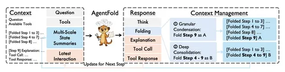

AgentFold — метод управления контекстом для агентов на длинных задачах
На длинных сценариях поиска и анализа веб-агенты либо хранят слишком много сырой информации, либо слишком часто её суммаризируют, что забивает контекст. Авторы сегодняшней статьи предлагают метод AgentFold (GitHub), призванный решить эту проблему, сделав память агента динамической и управляемой самим агентом.
Сейчас в веб-поиске используются два подхода. Первый — это ReAct, при котором все действия и решения конкатенируются в конец контекста. Благодаря этому ничего не теряется, но и контекстное окно забивается очень быстро. Второй подход — суммаризация на каждом шаге, однако при этом какая-то часть информации неизменно теряется.
Ключевая идея AgentFold — создание активного и динамически пересчитываемого контекста для каждого следующего шага. То есть агент самостоятельно выбирает, что нужно запомнить точно, а что можно суммаризовать. Авторы отмечают, что они вдохновлялись человеческой способностью к осмыслению собственного опыта.
В статье предлагается модифицировать и контекст, и то, в каком формате выдается ответ. Контекст должен состоять из следующих элементов:
• Question — исходный вопрос;
• Tools — доступные инструменты;
• Multi-Scale State Summaries — свёрнутые блоки прошлых шагов. Например, шаги с первого по третий представлены одним блоком. При этом свёрнутым может быть и один шаг;
• Latest Interaction — последний полный шаг.
Суть в том, что все предыдущие действия хранятся в сжатом виде, а последнее — в подробном. Это позволяет меньше загружать контекст.
Что касается ответа, то тут модель должна сперва размышлять, а потом делать фолдинг шагов. Он может быть гранулярным (granular) или глубоким (deep). В первом случае схлопывается только последний шаг, а во втором — целая ветка (например, «шаги с четвёртого по девятый»). После фолдинга идёт этап, на котором модель объясняет, почему объединила шаги именно так, как объединила. Наконец, вызываются инструменты и совершаются какие-либо действия.
Для обучения всему вышеописанному, авторы брали вопросы из WebSailor и отправляли их во внешние опенсорсные модели (GLM-4.5 и DeepSeek-V3.1), чтобы построить контекст конкретного шага. При этом о том, как генерируются данные, не сообщается.
Далее авторы генерировали ответ, выполняли действие, получали ответ от среды и собирали следующий шаг траектории. Проблема в том, что LLM сами не умеют сжимать контекст, что ведёт к ошибкам, галлюцинациям и тому подобному. Неправильные решения авторы отбрасывали, но как — в статье не описывается.
Итоговый датасет представляет собой не набор пар «вопрос-ответ», а выборочный набор пар взаимодействия (intersection pairs), удовлетворяющих определённым условиям. На эти пары делается SFT.
Согласно результатам замеров, AgentFold помогает снизить нагрузку на контекст к сотому шагу на 91% по сравнению с ReAct. При этом с увеличением числа шагов точность, как сообщают авторы, только растёт.
Разбор подготовил❣ Антон Гырдымов
Душный NLP
На длинных сценариях поиска и анализа веб-агенты либо хранят слишком много сырой информации, либо слишком часто её суммаризируют, что забивает контекст. Авторы сегодняшней статьи предлагают метод AgentFold (GitHub), призванный решить эту проблему, сделав память агента динамической и управляемой самим агентом.
Сейчас в веб-поиске используются два подхода. Первый — это ReAct, при котором все действия и решения конкатенируются в конец контекста. Благодаря этому ничего не теряется, но и контекстное окно забивается очень быстро. Второй подход — суммаризация на каждом шаге, однако при этом какая-то часть информации неизменно теряется.
Ключевая идея AgentFold — создание активного и динамически пересчитываемого контекста для каждого следующего шага. То есть агент самостоятельно выбирает, что нужно запомнить точно, а что можно суммаризовать. Авторы отмечают, что они вдохновлялись человеческой способностью к осмыслению собственного опыта.
В статье предлагается модифицировать и контекст, и то, в каком формате выдается ответ. Контекст должен состоять из следующих элементов:
• Question — исходный вопрос;
• Tools — доступные инструменты;
• Multi-Scale State Summaries — свёрнутые блоки прошлых шагов. Например, шаги с первого по третий представлены одним блоком. При этом свёрнутым может быть и один шаг;
• Latest Interaction — последний полный шаг.
Суть в том, что все предыдущие действия хранятся в сжатом виде, а последнее — в подробном. Это позволяет меньше загружать контекст.
Что касается ответа, то тут модель должна сперва размышлять, а потом делать фолдинг шагов. Он может быть гранулярным (granular) или глубоким (deep). В первом случае схлопывается только последний шаг, а во втором — целая ветка (например, «шаги с четвёртого по девятый»). После фолдинга идёт этап, на котором модель объясняет, почему объединила шаги именно так, как объединила. Наконец, вызываются инструменты и совершаются какие-либо действия.
Для обучения всему вышеописанному, авторы брали вопросы из WebSailor и отправляли их во внешние опенсорсные модели (GLM-4.5 и DeepSeek-V3.1), чтобы построить контекст конкретного шага. При этом о том, как генерируются данные, не сообщается.
Далее авторы генерировали ответ, выполняли действие, получали ответ от среды и собирали следующий шаг траектории. Проблема в том, что LLM сами не умеют сжимать контекст, что ведёт к ошибкам, галлюцинациям и тому подобному. Неправильные решения авторы отбрасывали, но как — в статье не описывается.
Итоговый датасет представляет собой не набор пар «вопрос-ответ», а выборочный набор пар взаимодействия (intersection pairs), удовлетворяющих определённым условиям. На эти пары делается SFT.
Согласно результатам замеров, AgentFold помогает снизить нагрузку на контекст к сотому шагу на 91% по сравнению с ReAct. При этом с увеличением числа шагов точность, как сообщают авторы, только растёт.
Разбор подготовил
Душный NLP

1 088 просмотров · 15 реакций
Открыть в Telegram · Открыть пост на сайте